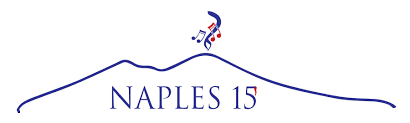

Branding and Identity
Naples 15 and Caffe Buzzino
Caffe Buzzino
Brand identity for a fictional Italian cafe, built around the tagline "An Afternoon in Italy." The system includes a primary logo, comprehensive style guide, typography system, color palette, and packaging design for coffee bag products.
View Full Style Guide →


Rebranding Naples 15
Background
Naples 15 is an Italian restaurant in Madison, WI, founded by two native Neapolitans, Antonio Catoia and Raffaele La Manna, who brought their family's pizza-making heritage to Wisconsin. The name itself, "Naples 15," is a direct reference to their affiliation with the Associazione Verace Pizza Napoletana (AVPN), the strict governing body in Naples that certifies authentic Neapolitan pizza, and they were reportedly the 15th pizzeria in the United States to receive this prestigious certification. The brand's story is, therefore, built on authenticity, tradition, and a direct transatlantic connection to the very birthplace of pizza.

Objective
The main challenge with the logo is that it isn't memorable, and doesn't effectively represent their business. The objective of the project was to capture Naples 15's authentic Italian aesthetic, and create a new visual identity with a clean and elegant logo. Their current logo is a light representation of Mt. Vesuvius, with the wordmark "Naples 15" below. The logo lacks a connection to food or pizza, which is their specialty. I wanted to create a logo that both represents Naples and pizza, but also feels authentic, as this will help make Naples 15 stand out as a more trustworthy and high quality restaurant.
3 Style Explorations


Final Logo Design
The logo is composed of a circular pizza icon representing the food and culture of Naples. Pizza slices emerge from the light and dark reds at the top of the pizza. In the bottom half, two blue slices outline Mt. Vesuvius. The use of blue refers to both the Gulf of Naples and Napoli's soccer team, the Azzurri, turning the pizza into a symbol of local pride. The top-left slice acts as the eruption, giving the design energy.

The logo seeks to merge food with location and heritage. The pizza is an icon and is easily identifiable, while the volcano registers as an index, a direct symbol of Naples. The logo's red tones connect to tomato and pizza, while the blues invoke tradition and culture. The design seems simple at first, but is layered with representation giving an impression of authenticity and quality.